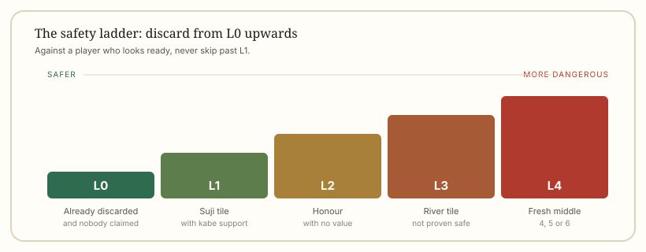

Strategy
Mahjong Defence: Suji, Kabe and Safe Tiles
Every point you do not give away is worth as much as a point you win. Defence is a skill with concrete rules, not a matter of instinct.
At a glance
- Core idea
- A point not given away is worth as much as a point won
- Safest discard
- A tile someone has already discarded
- Suji
- Only protects against a two-sided wait
- Kabe
- Four visible copies kill the runs that need them
- Worst discard
- A fresh middle tile against a player who looks ready
Defence is a skill with rules
Most players learn mahjong as an attacking game: build the hand, get to a wait, win. Then they play against someone who folds correctly and discover that the score does not move the way they expected. Every discard that doesn't deal in is a payment you never have to make.
Defence is not a mood. It is five safety levels, two geometric tricks and one decision matrix. Learn them and you can fold without guessing.
Five safety levels
| Level | Tile | Why it is safe |
|---|---|---|
| L0 | Fresh discard | Someone has already discarded it and nobody claimed it |
| L1 | Suji tile with three visible neighbours | The run that would need it is already broken |
| L2 | Honour that is not a round or seat wind | No scoring value, and hard to use in a pair |
| L3 | Tile already in the river | Seen, but not proven safe — someone may be waiting on a second copy |
| L4 | Fresh middle tile, 4 to 6 | Fits into the widest range of waits |
Push your discards down this list whenever an opponent shows intent. A player who is visibly one tile away should only ever receive L0 or L1.

Suji: what it protects and what it does not
Suji works through furiten. A player who has discarded a 4 cannot claim on 1 or 7, because both would complete a two-sided shape that contains their own discard (2-3 waiting on 1-4, or 5-6 waiting on 4-7). So once a 4 is in a player's river, the tiles 1 and 7 are safe against that player's two-sided waits.
This is a real protection, and a limited one. Suji does not protect against:
- Closed waits — 46 waiting on 5 has nothing to do with suji.
- Edge waits — 12 waiting on 3 is not a two-sided shape.
- Double pairs — a pair wait ignores runs entirely.
- Pair waits — the same.
Treat suji as one level of safety, never as proof. Players who discard "suji" tiles into closed waits lose just as badly as players who discard fresh tiles.
Kabe: when four copies make a tile dead
If all four copies of a tile are visible, no run containing it can still be in anyone's hand. That kills the closed waits that need it, and it makes the dead tile itself completely safe.
The classic case: four copies of 6 are visible. Nobody can hold a 6, so the closed waits that need one — 4-6 on 5, 5-7 on 6, 6-8 on 7 — are impossible, and 5 and 7 become considerably safer. The 6 itself is the safest discard in the game: with no copy left to draw, nobody can win on it. The flip side: a 4-5 block can now only win on 3, and a 7-8 block only on 9, so those two tiles become more dangerous, not less.
Kabe stacks with suji. A tile that is both a suji tile and protected by a kabe is close to L1 and can be discarded with confidence.
The attack-and-defence matrix
| Your hand | Opponent clearly ready | Opponent possibly ready | Opponent far away |
|---|---|---|---|
| Ready with a large hand | Defend: L0 and L1 only | Defend | Push cautiously |
| Ready with a small hand | Half attack, half defend | Lean defensive | Attack |
| Not ready | Defend, do not deal in | Defend | Build freely |
The row that surprises people is the first. A large hand that is ready is still not worth dealing into a larger one, because the swing between collecting and paying is often a multiple, not a fraction.
Reading intent from the river
You do not need to know what an opponent holds. You need to know whether they are close. Three signals do most of the work:
- Discard order. A player who discards honours early and middle tiles later is usually building; a player who discards middle tiles early has already committed to a narrow shape.
- Melds. Two claimed sets means a hand is close. Three means it is very close.
- Sudden caution. A player who stops discarding fresh tiles has probably reached a wait.
None of these is certain. All of them are enough to decide between L1 and L4.
Holding safe tiles for later
The best defensive players keep two or three known-safe tiles in hand through the middle game, deliberately not discarding them. When an opponent reaches a wait, those tiles are the ones that keep the hand alive.
This is why a hand with poor shape sometimes beats a hand with good shape: the poor hand has safe tiles to spend, and the good hand has to keep discarding dangerous ones.
Defence costs value, and that is the point
Folding means giving up a hand you might have won. That is the trade, and it is correct more often than beginners expect. In a four-player game, dealing into one large hand can cost more than three small wins bring in.
If you want the arithmetic of wide waits to compare against the cost of folding, read tile efficiency. The two skills are the same decision seen from opposite sides.
Quick answers
What is the safest tile to discard?
A tile another player has already discarded and nobody claimed. It is known not to complete anyone's hand at that moment.
Does suji make a tile safe?
No. Suji only rules out two-sided waits. Closed waits, edge waits, pair waits and double pairs all ignore it.
What is kabe?
When all four copies of a tile are visible, the runs that would need it cannot exist, so tiles adjacent to those dead runs become safer.
Should I defend even when my hand is ready?
Often, yes, if the opponent's hand is likely larger. Compare the payment you would make against the payment you would collect.